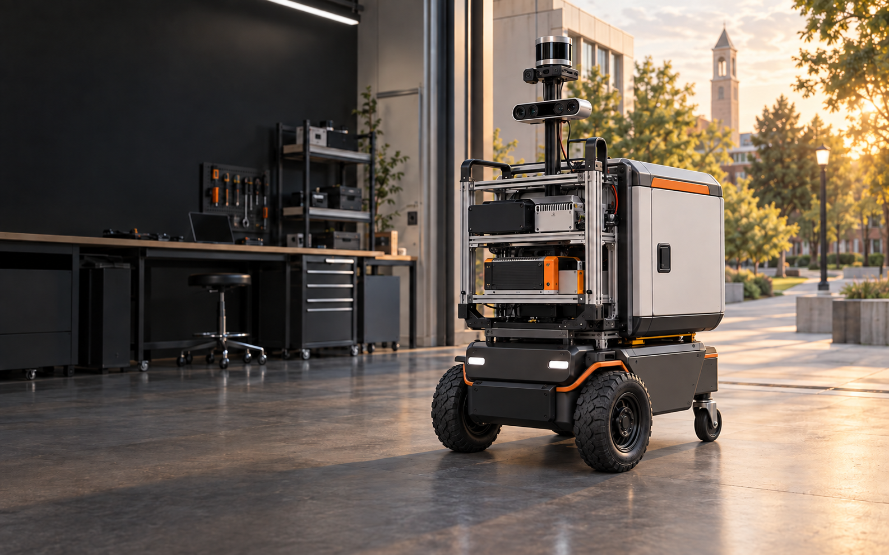

Understand the system
Inspect nodes, topics, actions, transforms, robot descriptions, hardware interfaces, and lifecycle behavior on a complete mobile robot.

University teaching platform + applied curriculum
Give students a functioning ROS 2 robot, then teach them to inspect, measure, modify, and improve every layer of its autonomy stack.
Program overview
Boltu Robotics combines a working autonomous mobile robot with a structured teaching package. Students begin by operating a known baseline, then trace data and decisions through sensing, state estimation, mapping, localization, planning, control, and safety.
The platform arrives with teleoperation, ROS 2 integration, mapping, localization, and Nav2 configured. That removes weeks of unreliable assembly while preserving the freedom to replace sensors, compute, motor control, algorithms, and payloads.
Inspect nodes, topics, actions, transforms, robot descriptions, hardware interfaces, and lifecycle behavior on a complete mobile robot.
Calibrate odometry, characterize sensor noise, compare state estimates, quantify map quality, and evaluate navigation performance.
Configure localization and Nav2, design delivery missions, introduce failures deliberately, and implement safe recovery behavior.
Replace a subsystem, recalibrate the platform, and defend the engineering tradeoffs using repeatable physical experiments.
Suggested 12-week sequence
Adopt the full sequence or integrate individual modules into an existing robotics course.
Start with laboratory safety and teleoperation, inspect the ROS 2 graph, validate URDF and transforms, and connect the differential-drive hardware through ros2_control.
Turn real measurements into a defensible motion estimate using calibrated wheel parameters, an IMU, covariance modeling, and sensor fusion.
Create maps, test localization recovery, and tune global planning, local control, costmaps, and obstacle response in a physical environment.
Move beyond successful demos by testing blocked routes, retry limits, waypoint execution, pickup confirmation, arrival signaling, and return-to-home behavior.
Teams replace or extend one subsystem, restore calibrated operation, and present a reproducible autonomous mission with quantitative results.
What your department receives
A two-powered-wheel differential-drive platform with passive rear caster support, documented connections, physical emergency stop, and an accessible modular deck.
Robot description, drive integration, state estimation, SLAM, localization, Nav2, RViz views, diagnostics, and repeatable setup procedures.
Instructor setup, student instructions, starter files, reference results, common failures, reset procedures, and grading rubrics.
Bring-up guidance, safety workflow, teaching preparation, and support for adapting the sequence to your course and facilities.
Designed for
Connect software, electrical, mechanical, control, and systems concepts through one shared platform.
Begin research from a documented reference system instead of repeatedly rebuilding infrastructure.
Focus student effort on a meaningful new capability while retaining a reliable autonomy baseline.
Give working engineers direct experience diagnosing an integrated autonomous system.
Final demonstration
Student teams complete a reproducible autonomous mission, quantify performance, document a failure, and explain the choices that produced their result.
Questions from faculty
No. The proposed program is centered on supervised physical laboratory work at your institution. Simulation can prepare students for each exercise, but it does not replace robot time.
Yes. The robot and labs are modular. Departments can use the complete suggested sequence or adopt only the hardware, software baseline, and selected exercises.
Python or C++, basic Linux use, and introductory linear algebra are recommended. Prior exposure to probability or control is useful but can be reviewed within the course.
No. The first platform is intended for indoor and supervised dry-weather experiments. Outdoor autonomy, rain resistance, powered lockers, and fleet operations are later product stages.
A practical planning ratio is one robot for every three to five students, plus suitable test space, charging procedures, workstations, tools, and replacement parts.
That is a central design goal. Sensors, compute, control components, autonomy packages, and payloads have documented interfaces and are meant to support replacement experiments.
Pilot university labs